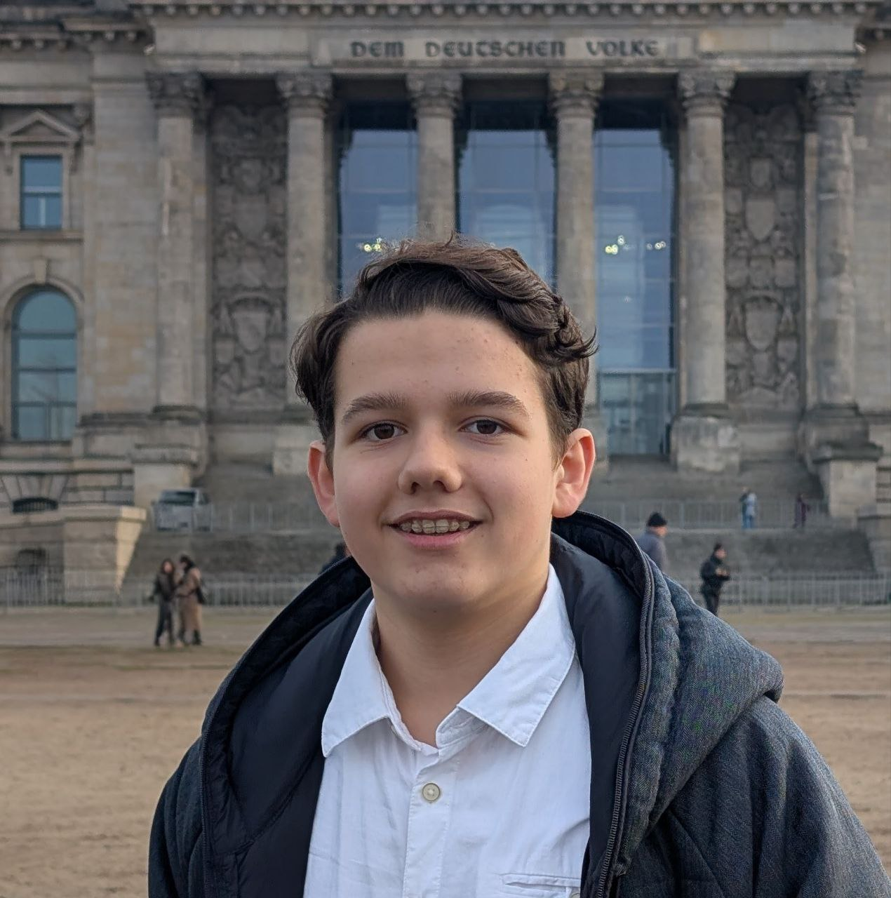
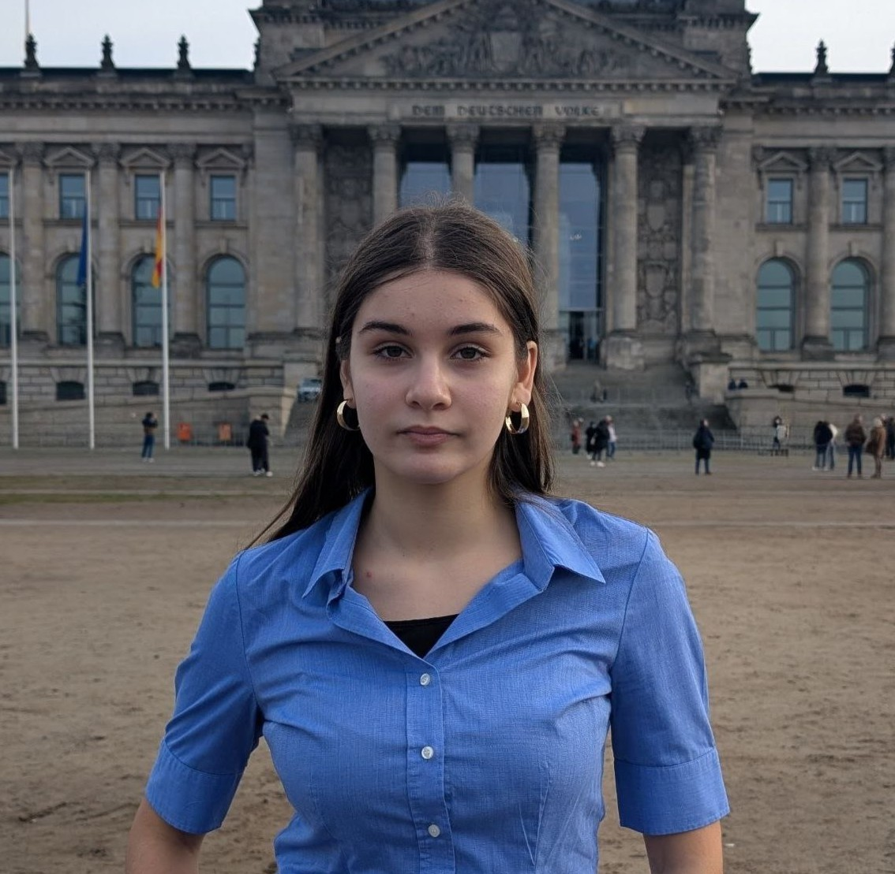
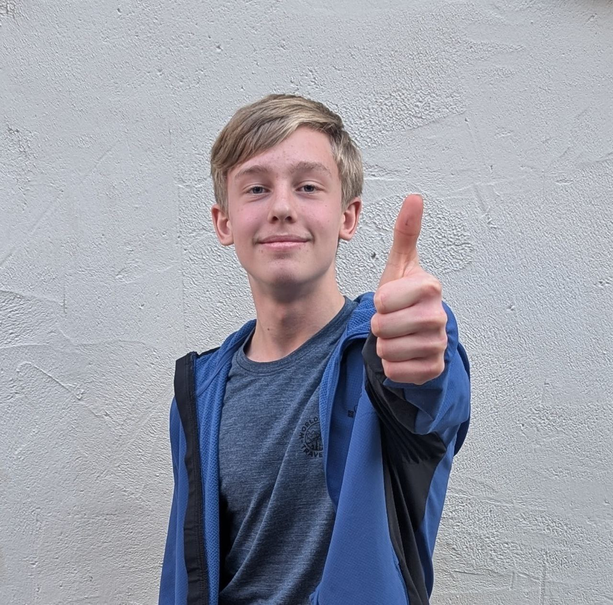

Unser Vorstand
Der Berliner Wendepunkt wird von Menschen geführt, die Expertise aus der Praxis mit politischem Mut vereinen. Keine Berufspolitiker, sondern Experten, die Verantwortung übernehmen.

Vorsitzender
Aliaksandr Safronenka
Als Experte für Wirtschaftspolitik und Stadtentwicklung steht er für den klaren Kurs der
Erneuerung.
Seine Vision ist ein Berlin, das Investoren anzieht statt abschreckt und in dem Leistungsträger
ein Zuhause finden. Er treibt die Agenda der Entbürokratisierung maßgeblich voran.
"Wir müssen den Mut haben, Berlin nicht nur zu verwalten, sondern neu zu erfinden."

Stellv. Vorsitzender
Thomas Klassen
Thomas Klassen ist unser Spezialist für Justiz und Rechtsstaatlichkeit. Er setzt sich
kompromisslos
für die Beschleunigung von Gerichtsverfahren und die konsequente Anwendung geltenden Rechts ein.
Sicherheit ist für ihn die Basis jeder Freiheit.
"Ein starker Rechtsstaat ist der beste Schutz für die Schwachen."

Generalsekretär
Maximilian-F. Pocher
Bildung und Digitalisierung sind seine Kernthemen. Als Generalsekretär organisiert er nicht nur
die Partei,
sondern kämpft für das 1:1 iPad-Programm an Schulen. Er will das Berliner Bildungssystem aus dem
Kreidezeitalter in die Zukunft führen.
"Digitale Bildung ist keine Option, sondern eine Überlebensfrage für den Standort."

Schatzmeisterin
Arev Khzarijan
Mit ihrer Expertise in Pflege und Medizin bringt Arev Khzarijan die menschliche Perspektive in
die harten Zahlen.
Sie verwaltet nicht nur die Finanzen, sondern entwickelt unsere Konzepte zur Entbürokratisierung
im Gesundheitswesen
und zur besseren Bezahlung von Pflegekräften.
"Effizienz im System schafft die Ressourcen für Menschlichkeit."

Beisitzer
Hlib Kuzhilniy
Verantwortlich für Design und Kommunikation. Hlib sorgt dafür, dass unsere Botschaften klar,
modern und
verständlich bei den Bürgern ankommen. Er steht für den frischen Wind und die Innovationskraft,
die der Berliner Wendepunkt verkörpert.
"Politik muss verstanden werden, um zu begeistern."